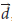
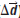

Motion and Motion Graphs
Kinematics
the study of motion without considering the forces that produce the motion.

Dynamics
the study of the causes of motion.

Position and Displacement
Position () is the straight-line distance and direction of an object from a reference point.
Displacement () is the change in position of an object. Mathematically, for one-dimensional motion, displacement is written as follows:

Speed and velocity
Average speed

Velocity

Average velocity () the displacement divided by the time interval for that change; the slope of a secant on a position–time graph.
Secant a straight line connecting two separate points on a curve.


The average velocity during the time interval from t1 to t2 is the slope of the dashed line connecting the two corresponding points on the curve.
Acceleration
Acceleration is a measure of how velocity changes with time. Average acceleration is the change in velocity divided by the time interval for that change. The formula for solving for the average acceleration is:

As with velocity, we often need to know the acceleration at a particular instant in time, or the instantaneous acceleration.
Examples
Calculating Average Velocity and Sketching a Velocity–Time Graph
The position–time graph in Figure shows the details of how an object moved.
(a) Calculate the average velocity during the time interval t1 = 1.0 s to t2 = 2.5 s
(b) Analyze the position–time graph in Figure. Use your analysis to sketch a qualitative velocity–time graph of the object’s motion.

Creating an Acceleration–Time Graph and Calculating the Maximum Acceleration
Suppose the sprinter in Figure a is running a 100 m dash.
The sprinter’s time and distance data have been recorded and used to make the velocity–time graph in Figure b.
Figure a

Figure b